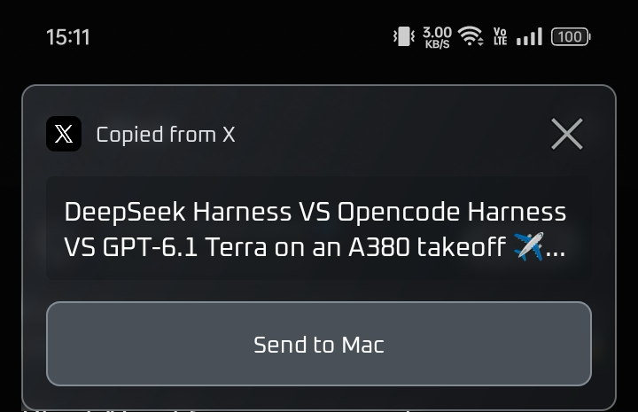
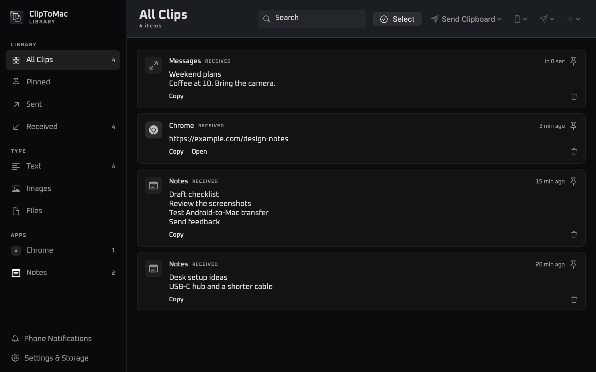
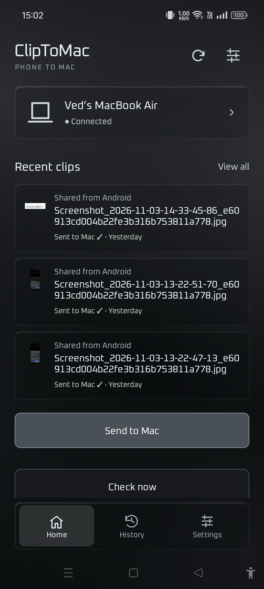
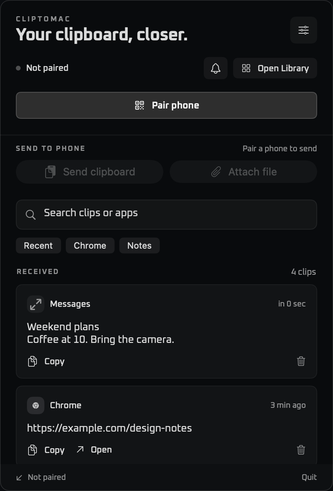
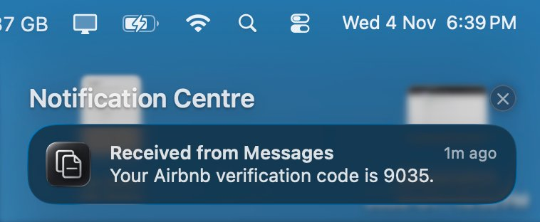

For Android and Mac
Copy on Android.
Pick up on Mac.
Copy text in any app on your phone and tap the instant prompt to send it straight to Mac. ClipToMac also transfers files both ways and forwards phone notifications and verification codes to your desktop.
Android 8+ · Apple silicon Mac with macOS 13+


Smart copy detection
Copy in any app. Send in one tap.
Whenever you copy text, links, or codes in any Android app—Chrome, X, WhatsApp, or Messages—ClipToMac detects it immediately and surfaces a quick Send to Mac prompt. Tap once and it’s on your Mac clipboard in real time.
On Mac, send your clipboard back with a single shortcut or drag-and-drop files. Everything is indexed in the searchable Library with pause, resume, and retry support.


Phone notifications & 2FA
Alerts, OTPs, and verification codes on your Mac.
Never pick up your phone just to read a one-time password again. When an SMS verification code, 2FA prompt, or message arrives on Android, ClipToMac forwards it straight to macOS Notification Centre.
Choose native macOS notifications that follow Focus or custom banners with source app icons. Reply inline or mark messages as read without touching your phone.

Pairing and privacy
Encrypted over your local network.
Clips, files, and forwarded notifications travel directly between paired devices over HTTPS. Scan a one-use QR code, compare the confirmation code, and approve pairing on the Mac.
Android verifies the Mac’s certificate on every connection. The Mac keeps its Library and recent phone alerts locally.
Feature guide
Everything you can do today
- Copy preview and app filters
- Preview text as you copy it in supported Android apps. Allow the overlay everywhere or choose specific apps. Use Share for apps where copy detection is unavailable.
- Two-way clipboard and file transfers
- Send text, links, images, and files. Use Android Share, the copy preview, or Send Clipboard on Mac. Enable automatic receiving on Android or copy received clips to the Mac clipboard on arrival.
- Progress and retries
- Track progress and pause, resume, or cancel supported Android-to-Mac file uploads. Android queues eligible sends for retry when the Mac is offline.
- Clip history and organization
- Browse local history. On Mac, search and filter by direction, type, or source app. Pin clips, organize them into collections, and copy or resend items from the Library.
- Mac shortcuts and storage
- Open the Library with a configurable global shortcut or use the menu bar. Set ClipToMac to launch at login, choose where attachments are saved, and export or import a Library backup.
- Phone alerts and replies
- Choose which Android apps forward alerts. Use native macOS notifications or custom banners with source icons. Reply or mark as read where supported, mute an app for an hour, and revisit or clear the latest 50 forwarded alerts.
- Secure local pairing
- Pair using a one-use QR code and verify the confirmation code on both devices. Transfers and forwarded alerts use pinned HTTPS on the local network.
Downloads
Android and Mac releases
Installable v1.0.0 beta releases are available for Android and Mac. Direct download links and source install guides are below.
- Mac ZIP
- Apple silicon with macOS 13 or later. Unzip and move ClipToMac to Applications. Mac release notes ↗
- Android APK
- Android 8 or later. Signed standalone APK. Android release notes ↗
Setup
Install, pair, and send.
Android 8 or later and an Apple silicon Mac running macOS 13 or later. Follow the source install guides for your devices.
Build and open the Mac app
Install the Xcode Command Line Tools, run
./build.shin the Mac repo, and open the app bundle at the printed path. Move the bundle to Applications if you want to keep it there.Install the Android app
Open the Android project in Android Studio and run it on your phone. For command line installation, build with
./gradlew :app:assembleDebug, then install the debug APK withadb install -r app/build/outputs/apk/debug/app-debug.apk.Pair on the same network
On the Mac, open Settings & Storage → Secure Pairing. Open the pairing QR, then scan it from Pair Mac securely → Scan QR on Android. Compare the six-digit code and approve on the Mac.
Send a test clip
Share a link to ClipToMac from Android, then look under Received in the Mac Library. To try the reverse direction, copy some text on the Mac and select Send Clipboard.
Choose optional features
Enable copy detection and display over other apps for the Android overlay. For alerts, grant Android notification access, choose the apps to forward, then enable forwarding and choose an alert style on the Mac.
FAQ
Common questions
Can I install without building?
Yes. Pre-built v1.0.0 beta packages for Mac and Android are available in the Downloads section above. The source guides below in Setup cover building either app from source.
Why can’t Android find my Mac?
Keep ClipToMac open on the Mac and check that both devices are on the same network. Guest Wi-Fi can isolate devices. If macOS asks for local network access, allow ClipToMac to connect.
What if the pairing QR expires?
Open a fresh pairing QR on the Mac and scan it again. Compare the six-digit code before approving.
Which permissions does the Android app need?
Camera access is used to scan a pairing QR. The copy overlay uses accessibility and display-over-other-apps access. Notification forwarding uses notification access. You can share clips manually without enabling the overlay or forwarding.
Why didn’t a forwarded alert show a banner?
Check app selection and forwarding on both devices. For macOS notifications, also check ClipToMac’s notification permissions, banner style, and the active Focus. The Library keeps recent forwarded alerts.
Why are Reply and Mark as read missing for some alerts?
ClipToMac only offers actions that the Android notification supports. In macOS Notification Center, some actions may be under Options.
Can I answer calls or mirror my screen today?
Call controls and screen mirroring are on the roadmap.
Do transfers use the cloud?
Transfers go directly between paired devices on your local network using pinned HTTPS.
Does automatic copy detection work in every Android app?
Android and the source app can limit copy detection. Use the Android Share menu if a copy is missed.
Where do my phone notifications go?
Choose native macOS notifications for Notification Center and Focus, or custom banners for the source app icon and inline controls. The Mac Library keeps the latest 50 forwarded alerts locally. You can clear them there.
Is notification mirroring optional?
Yes. Enable notification access on Android and choose which apps can forward alerts. You can turn forwarding off at any time.
Roadmap
What’s next for ClipToMac
These features are on the roadmap. They aren’t available in the current builds.
- Android screen mirroring
- View your Android screen on your Mac and start or stop sharing when you need it.
- Phone call controls
- See incoming calls on Mac and answer, decline, or end them when the phone supports those controls.
- Connect and disconnect
- See which paired phones are online. Disconnect a phone temporarily and reconnect later without pairing again.
- More reliable copy detection
- Improve copy detection across Android apps and make manual sharing easier when Android limits automatic detection.
- More notification controls
- Explore per-conversation filters and more actions for forwarded alerts.
Project
Contribute on GitHub
Report a bug, suggest a feature, or open a pull request in either repository.
Free for noncommercial use. Commercial use requires separate permission.